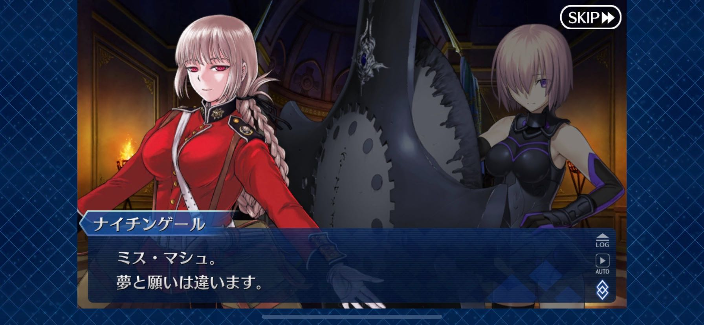
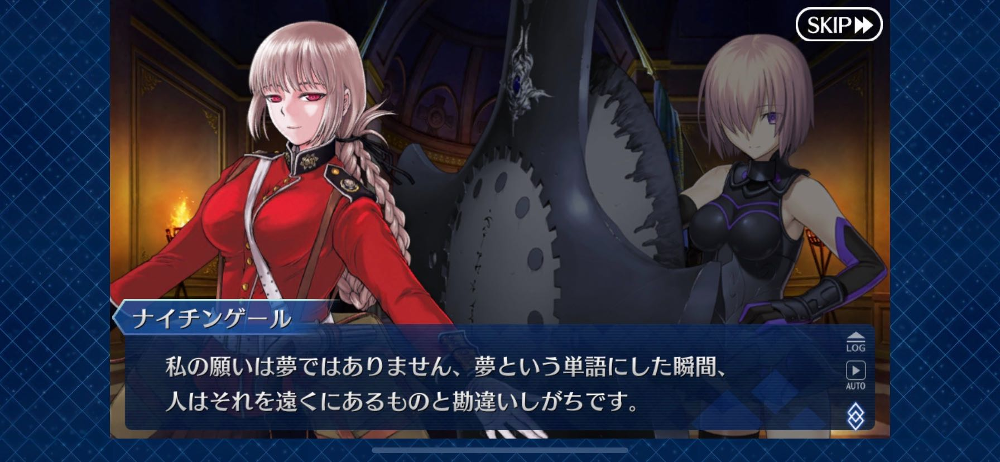
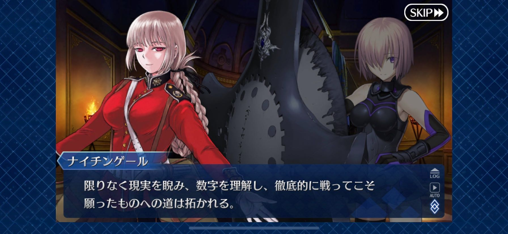
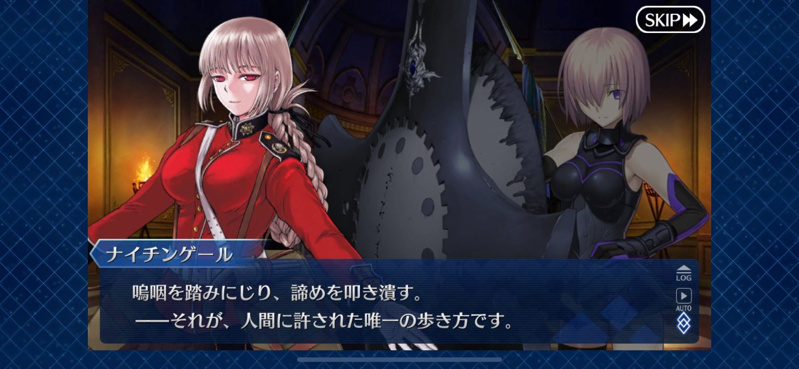

FGO をやっている#
オレオレのブログエンジン でも作れば、疎遠になってたブログも自然と書くようになるだろう。 引いては、技術的なことも書いたりして、雇用に前向きな影響を発生させるだろウェヒヒヒって思ってたけどマジで自然には何も書かないことがわかったので、弾みをつけるために勢いだけで書いてみることにした。
別にブログ書かなくてもいいじゃんって思うんですが、違うんです書きたいんです。 でもなんか書けないみたいな気分なので、ちょっとしたボタンのかけ違いなのかなと。 成長↑して知恵がついて、アウトプットするまでの敷居が高くなって悪循環してるのかもしれない。 普通にクソですね。
というところで表題のところなんけど、かの有名な FGO を 2019 年夏頃からプレイしている。 確か初めてやったイベントは、葛飾北斎（セイバー）が配布される水着イベだった。
面白いかっていうと、思ってたよりは面白かった。 楽しみどころとしては、敵の攻撃をスキルなどでしのぎつつ、攻撃が通るタイミングでバフをかけまくって一撃で落とす、という点である。 楽しさ的に似てるやつはというと、らんだむダンジョン とかのツクール製 RPG が思い浮かぶ。 他にもあった気もするけど思い出せないや。 基本的にダメージを高めるためのバフが主なんだけど、概ね乗算で計算されるのが最高に良くて高まる。 乗算で計算されるバフには夢がある。加算のバフはもっと自分を磨いて。
じゃあゲーム性があるのかというとさしてない。 いや誤解がないようにいうと、普通にコンシュマーのゲーム群もあんまりないと思ってるけど、それの平均点より若干出来が良い程度くらいのレベルでない。 似てるものというと、艦これでレシピを作ってからひたすら羅針盤をお祈りするのに似てる。 勝てる道筋を考えるまでがゲームであるって感じ。そしてその後の運ゲーがひどいのも同じ。禿げる。ほんとに何本かこれで抜けてる気がする。 全体的にゲームシステムはこれはこういうものだと考えれば良いと思ってるけど、ただソシャゲって期待値がものすごい高いので（ひとつのゲームに何年も楽しませろって考えるの狂ってない？）、その需要を賄うほどでは流石になかったというところである。
そしてガチャ、ガチャですよ。ガチャはいいぞ。 始めた頃のスタートダッシュの石で合計 150 連くらいして、取れたのが蘭陵王と術ギルだけだったときは流石に凹んだ。 でも長くやってたら良いのが引けたり引けなかったりで、運は平均点に収束してきた気がする。 最初に取ったキャラってなんか思い入れがあるので、勝手に親近感が湧いてストーリー的なものを感じることがある。 いいやつだよ蘭陵王。何した人なのか全然知らないし、せっかくなので調べてないけど。
ガチャって、好きなキャラを狙う派と強いキャラを狙う派に分かれると思ってて、自分は後者である。 石をためて、強いキャラを引いて、育成して、ステージをクリアする、ってのがソシャゲの（あんまり課金しないひとの）楽しみ方のある種の様式なんだけど、 FGO はちょっと特殊で石 1 個（ガチャには 3 個使う相場）で無限にコンティニューできちゃうので、正直ガチャ引くよりコンティニューしてクリアする方が大分安くなってて、そこに気づくと盛り下がるみたいのはあった。
ストーリーはまーたまーーに良いシーンがあるって感想。 自分は Fate シリーズの例外また例外がバンバンでてくる話の流れがあんまり好きじゃないから、そもそもあんまり適正がないのかもしれない。 Fate シリーズの中で一番好きなのは Carnival Phantasm だし、最近だと 衛宮さんちの今日のごはん だし、とにかく Fate の登場人物たちにはみんなに幸せになって欲しい。
以上です。最後に一番好きなシーンを画像テスト用に貼って終了にしとうございます。
   